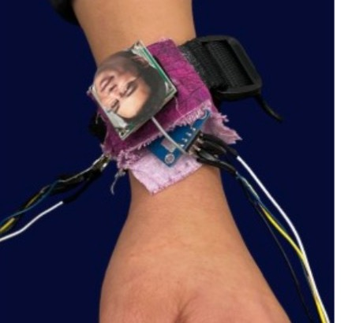
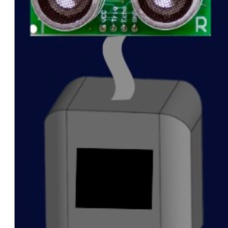
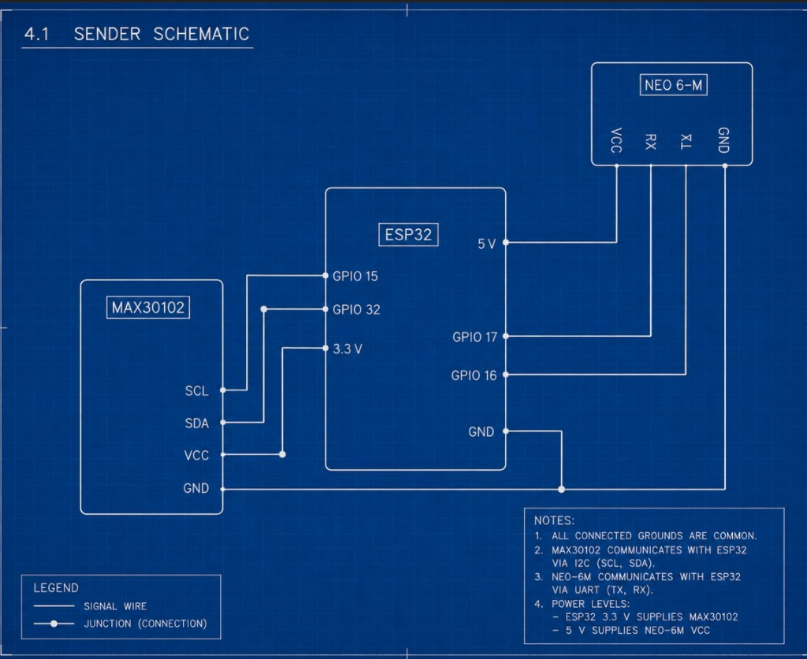
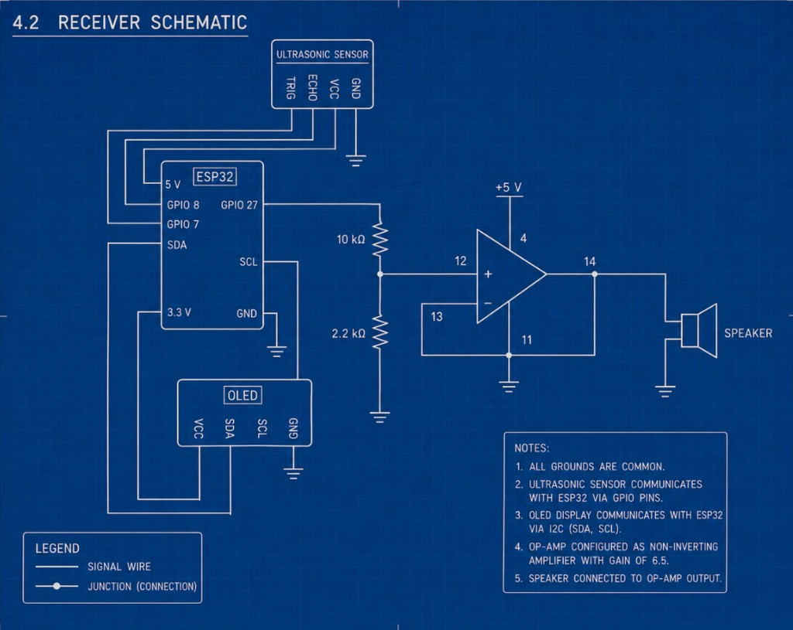

SUMMARY
Project Lumen is a smartwatch-integrated self-reflection band built for college students and young adults. It pairs real-time heart rate monitoring with intentional emotional check-ins, detecting stress through biometrics and prompting reflection through haptic alerts and a companion mobile app.
Unlike productivity-focused wearables, Lumen prioritizes emotional health and self-awareness, positioning itself in the growing biometric wellness market.
PROBLEM & SOLUTION
SYSTEM ARCHITECTURE
Three hardware subsystems communicate wirelessly via ESP-NOW, with a React companion app receiving data through a backend API.
HR + GPS → ESP-NOW → BUDDY GEORGE
Display + Buzzer
Haptic alert
| SUBSYSTEM | FUNCTION |
|---|---|
| Wristband (Sender) | Monitor BPM, detect spikes, capture GPS coordinates |
| Buddy George (Receiver) | Display stats, guide breathing, forward data to app |
| Vibration Motor (Receiver) | Haptic pulse when a new heart-rate spike is detected |
| Companion App | Dashboard, journaling, mood tracking, friends |
PROTOTYPES
Two-component hardware prototype: a wearable wristband for biometric sensing and a countertop reflection hub.


- Wristband: MAX30102 heart-rate sensor and NEO-6M GPS on ESP32, with vibration motor for haptic spike alerts
- Buddy George: US-015 ultrasonic sensor, OLED display, and piezo buzzer for proximity wake + breathing guidance
SENSORS & ACTUATORS
MAX30102
Optical heart-rate sensor (I2C). Detects blood-volume changes and logs spike events above 95 BPM.
NEO-6M GPS
Associates each spike with a physical location. Custom parser extracts lat/lon with PST timestamps.
HC-SR04 Ultrasonic
Non-contact wake on Buddy George. Activates the OLED and breathing routine when user is within ~20 cm.
SSD1306 OLED
128×64 display on the reflection hub showing BPM, spike count, and GPS coordinates.
Piezo Buzzer
Audio-guided breathing with a higher tone for inhale (800 Hz) and a lower tone for exhale (550 Hz).
DC Vibration Motor
5-second haptic pulse on the wristband whenever a new spike is detected.
SCHEMATICS
Wristband sender and Buddy George receiver wiring diagrams.


FIRMWARE OVERVIEW
All firmware written in MicroPython on ESP32. Three separate programs run on the sender and two receivers.
| MODULE | ROLE |
|---|---|
| Sender (Wristband) | Reads heart rate and GPS, detects spikes, broadcasts data packet via ESP-NOW every 200 ms |
| Motor Receiver | Listens for spike count increases and triggers a 5-second vibration |
| Buddy George Receiver | Displays stats when user approaches, runs breathing cycle, POSTs data to backend API |
Data is transmitted as a simple text packet: BPM, spike count, and GPS coordinates, sent simultaneously to both receivers.
COMPANION APP
React app that turns ESP32 biometric + GPS data into a calm reflection experience with dashboard, journaling, and community features.
Dashboard
Live BPM, spike count, and geocoded location (e.g. "Hesse Hall, UC Berkeley"). One-tap "Reflect on this entry" prompts journaling.
Journal Entry
Reflection form tied to ESP32 spike events with free-text insights, auto-filled location, and quick tags (school, stress, gratitude, etc.).
Friends & Profile
Track entries, spikes, and connections. Community feature to share reflection journeys with trusted friends.
Heart Rate Chart
Color-coded spike visualization for normal, elevated, and high readings, with location and timestamp on hover.
CONCLUSION
Project Lumen integrated hardware, firmware, and software into a cohesive wearable system that monitors physiological signals, detects stress events, and presents data through both a physical reflection hub and a mobile app.
The prototype demonstrates how embedded sensing, wireless communication, and thoughtful interface design can support emotional well-being. Future iterations could improve battery life, enclosure design, and sensor robustness.